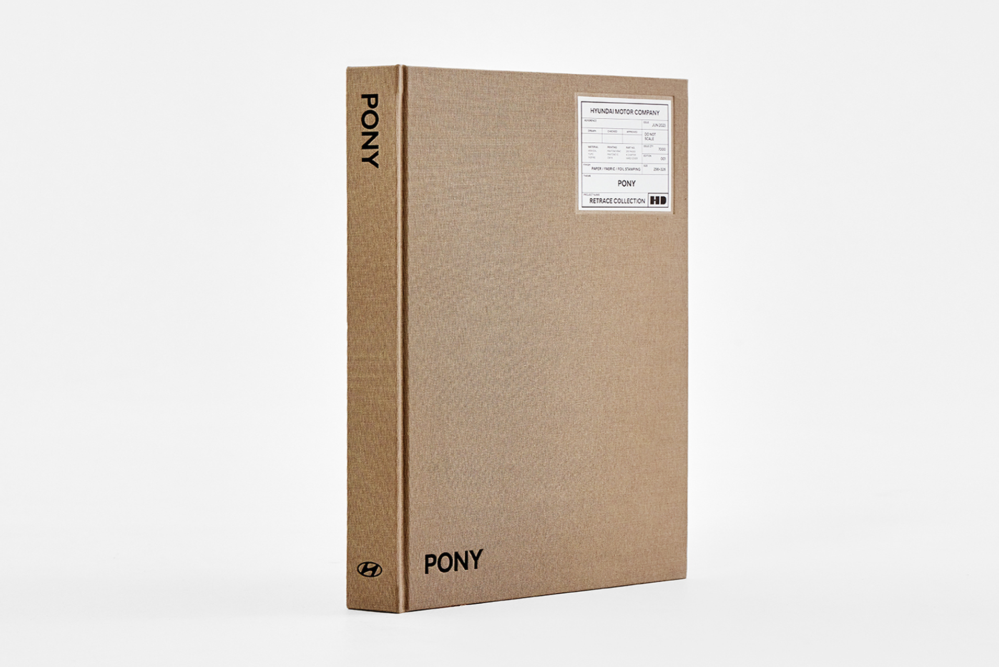
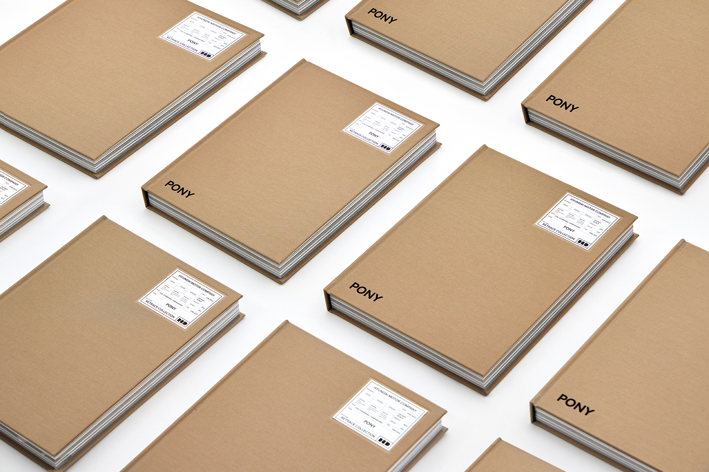
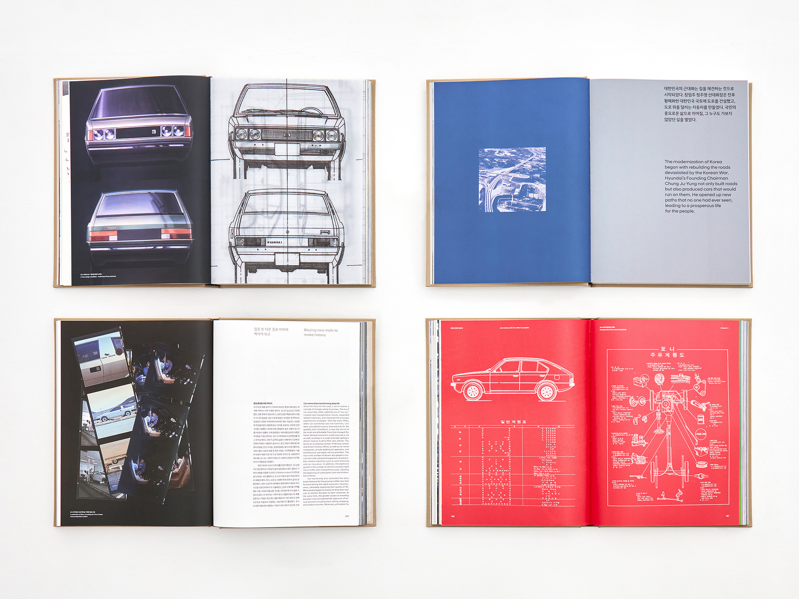
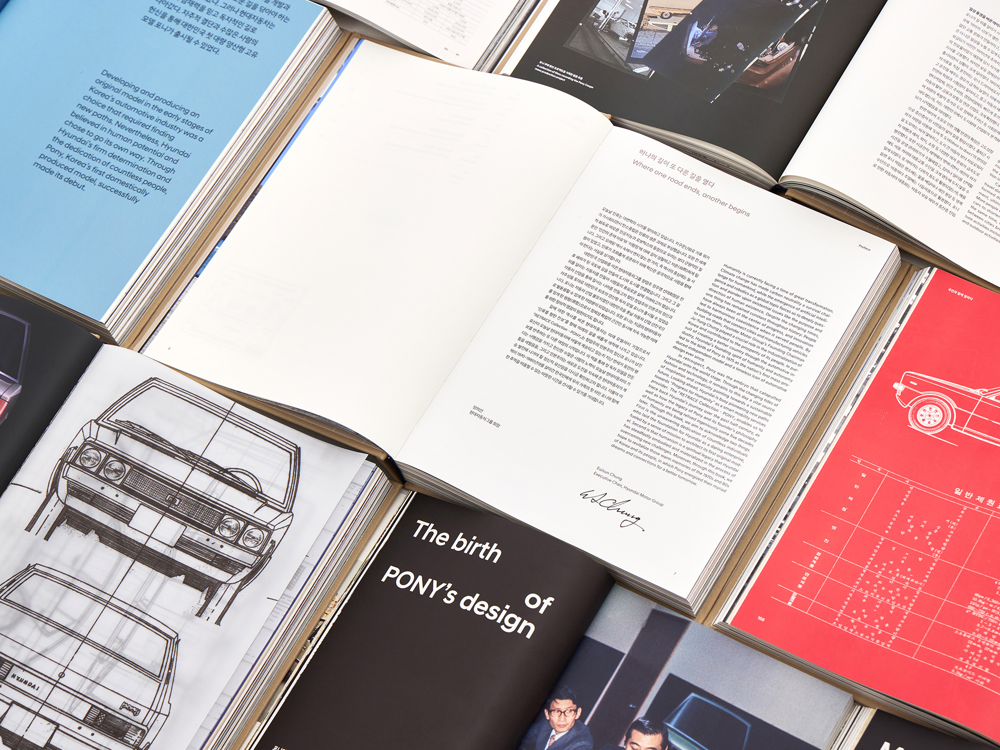
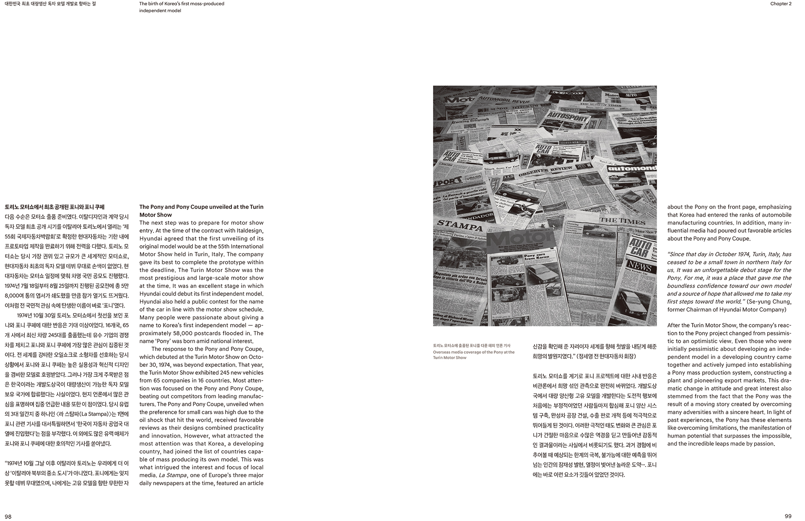

한국 최초의 대량 생산 자동차, 현대 포니의 디자인 유산을 기록한 기념 도서 시리즈.
PONY Retrace Collection은 현대 대한민국을 정의한 자동차인 현대 포니의 50주년을 기념하여 현대자동차를 위해 제작된 출판물입니다. 이 시리즈는 개발도상국이 스스로 만들어낼 수 있다는 가능성을 새롭게 증명한 자동차의 디자인 기원, 엔지니어링 결정, 그리고 문화적 영향을 추적합니다.
책의 물성은 산업적 문서의 언어를 담습니다. 공장 청사진과 엔지니어링 도면을 참조한 엠보싱 기술 사양 레이블이 크래프트 린넨 하드커버를 장식하며, 내지는 아카이브 사진, 타이포그래픽 스프레드, 세밀한 기술 일러스트레이션 사이를 넘나듭니다.
타이포그래피는 전반에 걸쳐 촘촘하고 기능적인 그리드 위에 설정되어 있습니다. 독서 경험 자체가 자동차 설계 과정의 정밀함을 반영합니다.



